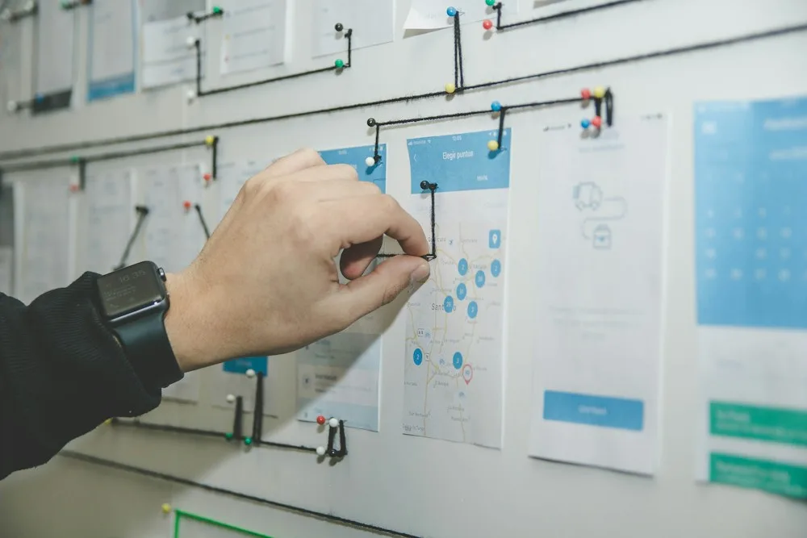

One shared context
Bring work, decisions, owners, and signals together without forcing teams into another maze of tabs.
One focused workspace for the decisions, workflows, signals, and people that keep modern teams moving.
Stackly brings scattered operational context into one place, giving teams a clearer view of what matters now and what needs attention next.

Bring work, decisions, owners, and signals together without forcing teams into another maze of tabs.
Give every contributor the same view of priorities so conversations can move from status to action.
Simple interfaces make complex workflows easier to understand, operate, and improve.
Technology should remove friction from collaboration, not add another layer of administration.
Move from scattered tools to a coherent operating layer. Stackly connects the work your team already does with the context needed to make better decisions.
Purpose-built capabilities turn a fragmented operating day into a clearer, more connected flow.
Bring teams, projects, decisions, and context into focused operating spaces.
Reduce repetitive handoffs and make recurring work easier to run consistently.
Turn live signals into useful views that help people understand what needs attention.
Keep conversations close to the work and the work close to its owners.

Clear hierarchy, useful defaults, and just enough structure to keep people moving.
The best software makes the important thing easier to see. Every Stackly surface is designed around that principle.
Stackly gives teams a simple visual language for turning incoming information into owned, trackable work.
Collect the signals, requests, and decisions that deserve a place in the workflow.
Give each item context, an owner, a next step, and a clear relationship to the wider work.
Keep progress visible and make the next action obvious for everyone involved.
Comments, ownership, updates, and decisions stay connected to the context that gives them meaning.
Useful intelligence is not another wall of numbers. It is a sharper way to understand movement, friction, and attention across the work.

Stackly is designed as a connective layer. Keep the tools that make sense and bring the important context into one clearer operating view.
Trust is part of product design: clear ownership, dependable workflows, thoughtful permissions, and a platform that respects operational context.
Keep workspace visibility aligned with the people and responsibilities that need it.
Make ownership and movement easier to understand across the workflow.
Reduce ambiguity around what changed, why it changed, and what comes next.
From leadership reviews to day-to-day delivery, Stackly adapts to the way different teams need to operate.
Keep decisions, priorities, and accountability visible.
Turn recurring work into repeatable flows.
Connect insight, decisions, and delivery.
Make team context easier to coordinate.

Build and ship with clear technical direction.
Short perspectives on product thinking, operational clarity, and the human side of modern software.

Good software does not just add capability. It removes uncertainty from the moment that matters.
Read perspective
Fragmentation creates a tax on attention long before it shows up in a report.
Read perspectiveAdoption is often a design problem before it becomes a training problem.
Read perspectiveStackly is built around a simple belief: when people have the right context at the right moment, teams move with more confidence.
See how Stackly can bring your workflows, decisions, and team context into one focused platform.